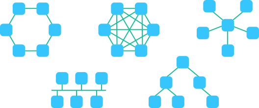

Topologie sítě popisuje, jak jsou zařízení v síti uspořádána a propojena. Může jít o skutečné zapojení kabelů (fyzická topologie) nebo o to, jak se data v síti chovají a kudy obvykle „tečou“ (logická topologie). Různé topologie mají různé výhody a nevýhody – některé jsou levné, jiné zase spolehlivější.

📘 Základní text
U sběrnicové topologie jsou všechna zařízení připojena k jednomu společnému kabelu (sběrnici). Data se šíří po této „hlavní trase“ a zařízení si z nich vybere to, co je určené pro něj.
Výhody:
- jednoduché zapojení,
- méně kabelů (levnější),
- v minulosti se používala často.
Nevýhody:
- porucha hlavního kabelu může zastavit celou síť,
- horší hledání závad,
- při větším počtu zařízení může být síť pomalejší.
Realizace: historicky koaxiální kabel (starší ethernet).
Použitelnost: dnes spíše výjimečně, v moderních LAN se téměř nepoužívá.
V kruhové topologii jsou zařízení propojena do kruhu. Data putují postupně od zařízení k zařízení, dokud nedorazí k cíli.
Výhody:
- data mohou putovat řízeně v jednom směru,
- při správném řešení je komunikace přehledná.
Nevýhody:
- výpadek jednoho zařízení nebo kabelu může přerušit kruh,
- rozšiřování sítě je složitější.
Realizace: historicky např. Token Ring; existují i „dvojité kruhy“ pro větší spolehlivost.
Použitelnost: dnes spíš v průmyslu nebo speciálních řešeních, ne v běžných školních LAN.
Hvězdicová topologie je dnes nejběžnější. Všechna zařízení jsou připojena do jednoho centrálního prvku (nejčastěji switch nebo domácí router).
Výhody:
- když se pokazí jeden kabel/počítač, ostatní většinou fungují dál,
- snadné rozšiřování – připojíš další zařízení do switche,
- dobrá přehlednost a správa.
Nevýhody:
- když se pokazí centrální prvek (switch/router), síť přestane fungovat,
- více kabelů než u sběrnice.
Realizace: typicky ethernet (UTP kabely) + switch; u Wi-Fi je centrem access point/router.
Použitelnost: domácnosti, školy, firmy – prakticky všude.
Stromová topologie je vlastně „hvězda z více hvězd“. Centrální prvek spojuje další switche, které pak spojují zařízení v jednotlivých učebnách nebo patrech.
Výhody:
- dobře se hodí pro větší budovy (škola, firma),
- snadné rozšiřování přidáním další „větve“,
- přehledná struktura.
Nevýhody:
- když vypadne „kmen“ (hlavní propojení), může odpojit celou část sítě,
- vyžaduje plánování, aby byla síť rychlá a stabilní.
Realizace: více switchů propojených hierarchicky (core/distribution/access).
Použitelnost: školy, firmy, vícepatrové budovy, větší LAN s více místnostmi.
V mesh topologii je více zařízení propojeno mezi sebou „do sítě“. Existuje: plná mesh (každý s každým) a částečná mesh (jen některé propojení). Cílem je vysoká spolehlivost.
Výhody:
- velká spolehlivost – když jedna cesta nefunguje, data jdou jinudy,
- hodí se pro důležité sítě.
Nevýhody:
- hodně propojení = vyšší cena a složitost,
- náročnější správa.
Realizace: páteřní sítě, propojení mezi routery, některé Wi-Fi mesh systémy.
Použitelnost: internetová infrastruktura, datová centra, speciální bezdrátové sítě.
💡 Zajímavosti
Některé topologie (např. sběrnice nebo ring) byly populární v době, kdy byly síťové prvky drahé a chtělo se šetřit kabely. Dnes jsou switche levné a rychlé, a tak převládá hvězda a strom.
Moderní sítě také kladou důraz na jednoduchou správu a spolehlivost – a to hvězdicová/stromová topologie splňuje dobře.
- Bus: problém na hlavním kabelu může zastavit celou síť.
- Ring: výpadek jednoho místa může přerušit kruh.
- Star: výpadek jednoho PC nevadí, výpadek switche/routeru je zásadní.
- Tree: výpadek hlavního propojení může odpojit celou větev.
- Mesh: síť často najde náhradní cestu.
⭐ Rozšiřující učivo
Fyzická topologie popisuje skutečné kabely a zapojení. Logická topologie popisuje, jak se v síti pohybují data.
Například síť může mít fyzicky hvězdu (všechno vede do switche), ale logicky může být provoz řízen tak, že některé části spolu komunikují více než jiné.
Reálné sítě často nejsou „čisté“. Ve škole může být strom (hlavní switch → switche ve třídách), ale v učebně jsou počítače zapojené jako hvězda do jednoho switche. Výsledkem je kombinace více topologií.
Internet není jedna topologie. Je to obrovská síť mnoha sítí, kde jsou propojeny tisíce routerů. V páteřních částech se často používají principy podobné mesh, protože je důležitá spolehlivost a více cest.
Shrnutí
- Topologie je způsob uspořádání a propojení zařízení v síti.
- Každá topologie má jiné výhody a nevýhody.
- Dnes se nejčastěji používá hvězdicová a stromová topologie.
- Mesh topologie je dražší, ale velmi spolehlivá.